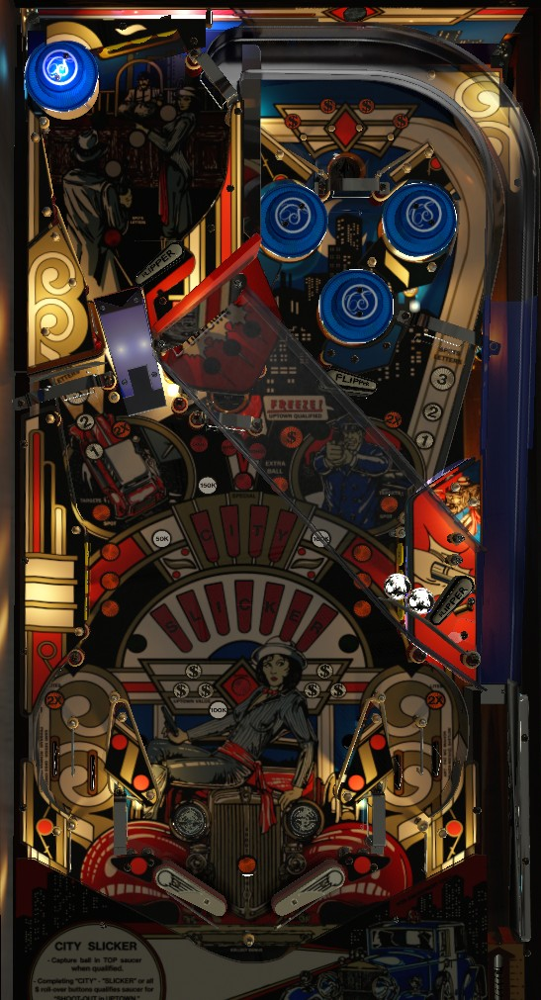

Shoot orbits to spot letters in City Slicker. The left orbit makes a full loop, potentially spotting twice as many letters but putting the ball out of control; the right orbit usually puts the ball in the top saucer, which scores moderate points and can lock a ball. To lock a ball and play Uptown, spell City Slicker in full or make all 4 buttons above the top saucer. During Uptown, shoot 6 flashing targets on the diagonal playfield to score 100,000 or a Special. 3 shots to the center saucer collects the bonus (10,000 per letter) but the return feed, which uses a computer controlled flipper, is very dangerous.
The below picture of City Slicker's playfield was taken from the VPX recreation by Mistermixer et al.
A plunged ball goes to the upper left playfield, which contains 3 standup targets and a pop bumper. Hit a flashing target to score 10,000 points and light it. Lit targets and the pop bumper score 1,000 points. Lighting all 3 targets resets them and spots a City Slicker letter. Depending on game settings, completing these targets may be able to spot any letter, or they may only be able to spot letters in City.
During normal gameplay, a ball can be shot up the left ramp to re-access the upper left playfield, but there's little reason to do this. Points and City Slicker letters can be earned elsewhere on the table more easily.
It is not uncommon for a plunged ball to pass through the upper playfield and land on a lower playfield flipper without hitting any switches. If this happens, you can allow the ball to drain and get it back for free, since the playfield was not validated. There is no ball save of any kind, though, so this opportunity disappears if you have scored any points. When starting multiball, the locked ball will not kick out until the plunged second ball hits a switch somewhere in the game.
The numbers in front of each orbit indicate how many City Slicker letters are spotted by shooting that orbit. Making an orbit spots the lit number of letters and increases the lit number, up to 3. Each orbit's lit number decreases over time (every 5, 10, 15, or 20 seconds). Going through either in lane and immediately shooting the opposite orbit awards 2x the number of lit letters for the next shot only. A single rollunder gate governs what is considered a shot to each orbit, and there's no cooldown on registering those rollunders, so it's possible to trigger both orbits with a shot to the left that goes all the way around, and it's also possible to trigger one orbit twice by going part of the way up and then back down.
Spotted City Slicker letters from the orbits will always give progress toward Slicker first, but it is always possible to earn both City and Slicker letters from the orbits.
One or more targets in each bank will be lit. Shoot a lit target to unlight it. Unlighting all targets in a bank spots a City Slicker letter. Depending on game settings, these side targets can either spot any City Slicker letter, or just Slicker letters. A separate difficulty setting decides whether each bank always starts with all 3 targets lit, or if the first two spotted letters on a ball for a given bank require only 1 and 2 target hits respectively.
City Slicker letters also serve as the end of ball bonus, scored as 10,000 points per letter. Up to 3 completions of City Slicker can be stored for the bonus, making the max bonus 330,000 points (3 completions of City Slicker, plus 10 of the 11 letters required for a further completion). Completing City Slicker multiple times in a game give additional awards: 50,000 for the 2nd completion, 100,000 for the 3rd, and 150,000 for any completion thereafter, with an extra ball available at somewhere between 1 and 8 completions and a Special available at somewhere between 2 and 9 depending on game settings (default is 4 for extra ball and 5 for Special).
There are two ways to qualify the Uptown round: spell City Slicker in full, or light the 4 orange $ symbols at the top of the playfield by pressing all four of the rollover buttons above the top saucer. Solidly lit buttons have been pressed; the top saucer scores 25,000 points per solidly lit $ symbol. When Uptown is qualified, it can always be started by shooting the top saucer; game settings determine whether or not the center saucer can be used to start Uptown as well. If Uptown is ready at the top saucer, a white light on the game's back panel will flash; if Uptown is ready at the center saucer, an orange light labelled Freeze! Uptown Qualified will be lit.
Uptown takes place on the diagonal playfield consisting of a mini-flipper just above the right in lane, two captive balls, and three standup targets. While in Uptown, hit whichever of the three standup targets is lit to earn one white $ symbol and score 10,000 points. Collecting all 6 white $ symbols gives the Uptown Award. Most Uptown Awards are 100,000 points; one specific award (the 3rd one by default, but can be anywhere from the 1st to the 8th) is a Special instead.
The duration of the Uptown round is variable: it can be a flat time limit between 2.5 and 20 seconds in 2.5 second increments, or the time limit can be between 1 and 8 seconds times the number of City Slicker letters you have lit (which will always be 11 unless you qualified Uptown with the 4 orange $ buttons near the top saucer).
If Uptown was started at the center saucer, you immediately return to single ball play and must spell City Slicker or collect 4 orange $ symbols to qualify Uptown again. If Uptown was started at the top saucer, the ball will be locked for multiball and kicked out as soon as the 2nd ball hits any switch on the playfield. There are no multiball-specific scoring features or jackpots. Multiball is always 2 balls, and there is no ball save, quick restart, or add-a-ball function. Use multiball to collect more City Slicker letters or shoot the center saucer for bonus collects (see below). If City Slicker is completed in multiball, you will receive all of the expected awards, but Uptown is not qualified; you must complete City Slicker again outside of multiball to earn another chance at Uptown and a fresh multiball. For this reason, it may sometimes be desirable to collect 10 of the 11 City Slicker letters in multiball, then intentionally drain out of multiball to ensure that the next completion gives you another chance at Uptown.
The center saucer scores 5,000 points. Every 3rd shot to the center saucer scores a bonus collect, worth 10,000 points for each currently lit City Slicker letter plus 110,000 points for each previous completion (maximum 3 previous completions).
The center saucer kicks out almost directly to the right, putting the ball in front of a mini flipper. The game will then automatically flip this flipper to send the ball back toward the player. Depending on the exact timing of this and the strength of the saucer kickout, the ball may be directed toward the right flipper, the left out lane/slingshot, or anything in between, and it will usually happen very fast. This unpredictable feed plus the large posts on either side of the center saucer make the bonus collect a high-risk, high-reward opportunity that should not be considered until bonus is very high.
On easy settings, completing City Slicker or lighting the four orange $ symbols qualifies Uptown at the center saucer as described above. Starting Uptown from the center saucer does not automatically start multiball when the Uptown round ends.
In lanes and out lanes are reversed from a conventional setup on both sides. The lane closer to the edge of the table is actually the in lane. It curves inward and sends the ball over a gap and through a one way gate to the flipper. The lanes closer to the flippers are actually the out lanes and go straight down towards the out hole. Always be on guard whenever the ball heads toward this area at all. A ball going through the outside lane can do so slowly, choke up at the mini jump, and fall down anyway, even though it went through the "in" lane. Conversely, a ball going through the inner straight down lane may be able to be nudged back into play off of the corner post that would form the beginning of the jump.
In lanes score 25,000 points and light the opposite orbit for 2x for about 5 seconds. Out lanes score 15,000 points.
End of ball bonus consists of 10,000 points for each currently selected City Slicker letter, plus 110,000 points each for up to three previous City Slicker completions. Max bonus is 430,000 points (three completions, plus 10 of the 11 letters required for an additional completion). There is no bonus multiplier. Bonus is always held from ball to ball. Bonus can be collected mid-ball by making 3 shots to the center saucer.
Special can be set to score points. I have not confirmed the exact point value, but would guess 100,000 given the rest of the game's scoring and other Bally Midway rulesets from around the same time. There does not seem to be a way to set extra balls to score points. In some tournaments, extra balls are kept on with the stipulation that the flippers cannot be used during an extra ball; this is not insignificant, since you will still collect the end of ball bonsu an additional time, which can be worth up to another 430,000 points.
Other software settings that affect rules and gameplay have been discussed throughout the guide.